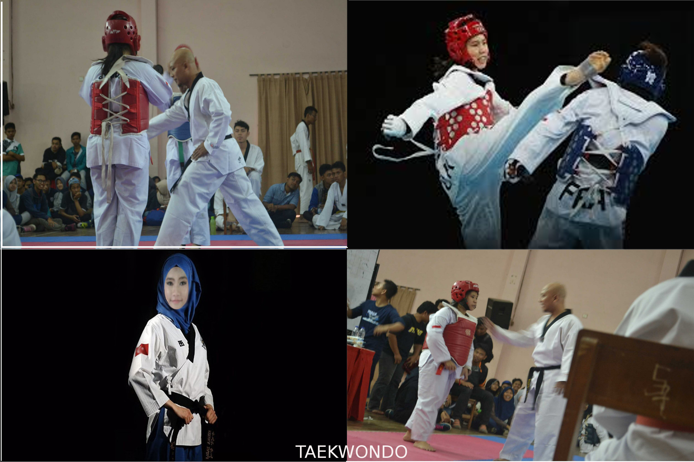

Hello guys
Asalamualaikum.WR.WB
Hai!Perkenalkan nama aku Ferida hasim
Sebenernya sih nama lahir ku itu Firdah Hasyim,cuma gara gara papahku salah tulis nama sewaktu aku masih tk,dan papah ku baru sadar pas aku kelas 6 sd,ya jadi mau gak mau sampai sekarang nama ku jadi Ferida Hasyim deh,walaupun aku tau nama ku itu salah sewaktu aku kelas 1 sd tapi aku gak bilang bilang sama papahku karena aku lebih suka nama ku yang sekarang
My story

Sekarang aku mau menceritakan tentang aku dan keluargaku.Di rumah,aku dipanggil Dede katanya sih gara gara tadinya aku dikira mau jadi anak yang terakhir dikeluarga ku,padahal sekarang aku mempunyai dua adik.Tapi tetep aja sampai sekarang aku tetap dipanggil dede kalau dirumah.
Karena mempunyai nama kecil yang dan banyak orang yang tau,jadi teman semasa aku SD dan SMP ada yang memanggilku dede dan ada juga yang memenggilku ferida.Tapi lucunya karena sebagian orang yang tau nama kecilku dan mana asli ku,jadi terkandang jika orang menanyakan aku kepada orang yang hanya tau nama asliku dia akan menjawab siapa itu ferida dan sebaliknya.
Oh ya,aku adalah anak ke tiga dari lima bersaudra.Aku mempunyai 2 kaka yaitu Ari Hasyim ashari,dan Ferina Hasyim,serta 2 adik yang bernama Hasyim Saidi dan Ferani Hasyim.
Aku lahir pada tanggal 07 Agustus 2000 di bogor,dan tinggal di bogor juga sih,tapi di daerah megamendung.Aku mempunyai orang tua yang paling hebat sedunia dan aku sangat bersyukur mempunyai orang tua seperti orang tua ku,wkwkwk
Hobi
Hobiku adalah olahraga

Aku mulai mengikuti seni bela diri TAEKWONDO sejak kelas 1 SMP dan mengikuti berbagai kejuaraan.Walaupun tinggi ku agak minim,tapi alhamdulillah aku sudah mendapatkan banyak piagam penghargaan.Dan sekarang aku sudah mengumpulkan,2 medali emas,1 medali perak,dan 1 medali perunggu,sebagai hasil dari berbagai kejuaraan yang telah aku ikuti(agak sombong dikit,wkwk).

Sekarang aku bersekolah di SMK-SMAK Bogor,disini aku memulai pengalaman yang baru yaitu dengan mengikuti ekstrakulikuler PAWASKA (yaitu eskul pencinta alam)dan kegiatan kami disini seperti:
-Mendaki Gunung
-Mengadakan kemping
-Dan berjalan jalan di alam
Disini aku diajarkan banyak hal baru seperti " Mental ngalahin Fisik "," Satu Tim Satu Nyawa " , di PAWASKA itu kekeluargaannya benar benar sangat terasa antar sesama anggota bahkan sampai ke alumninya sekalipun,dan banyak lagi pengalaman yang gak akan habis bila diceritakan.
Sudah dulu yaa,berbagi ceritanya nanti disambung lagi.... :D
bye....
Salamm..
F.H